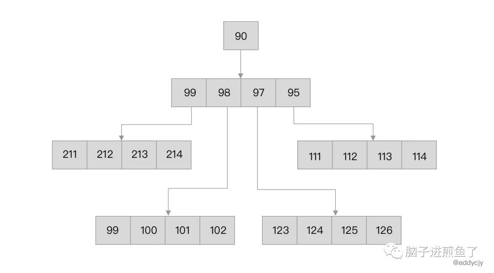
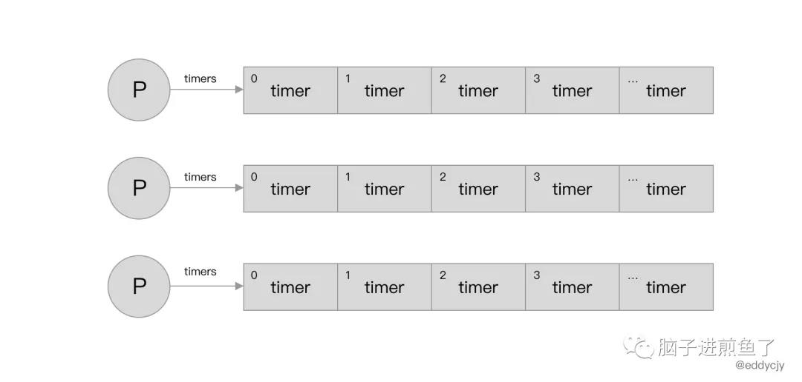

#Go进阶之旅1
大家好，我是煎鱼。久违的源码剖析系列，让我们一起努力，看看谁能坚持到最后，因为学习一定是给能够坚持重复啃和热衷于三连的人。
接下来正式开始今天的内容讲解，今天的男主角是计时器 timer。
在实际的应用工程中，我们常常会需要多久后，或定时去做某个事情。甚至在分析标准库 context 的父子级传播时，都能见到等待多久后自动触发取消事件的踪影。
而在 Go 语言中，能够完成这类运行的功能诉求就是标准库 time，在具体的功能范畴上我们称其为 “计时器“，是一个非常具有价值的一个模块。在这篇文章中我们将对其做进一步的分析和研讨。
什么是 timer
可以控制时间，确保应用程序中的某段代码在某个时刻运行。在 Go 语言中可以单次执行，也可以循环执行。
最常见的方式就是引用标准库 time 去做一些事情，普通开发者经常使用到的标准库代码是：
1 | time.Now().Unix() |
上述代码可用于获取当前时间的 Unix 时间戳，而在内部的具体实现上提供了Time、Timer 以及 Ticker 的各类配套方法。
timer 基本特性
Timer
演示代码：
1 | func main() { |
输出结果：
1 | // 等待两秒... |
我们可以通过 time.NewTimer 方法定时在 2 秒进行程序的执行。而其还有个变种的用法，在做 channel 的源码剖析时有发现
1 | func main() { |
在等待 2 秒后，会立即调用 time.AfterFunc 所对应的匿名方法。在时间上我们也可以指定对应的具体时间，达到异步的定时执行等诉求。
Ticker
演示代码：
1 | func main() { |
输出结果：
1 | // 每隔一秒输出一次 |
我们通过 time.NewTicker 方法设定每 1 秒执行一次方法，因此在 for-select 中，我们会每 1 秒就可以自动 “炸一条煎鱼”，真是快乐极了。
而由于我们在 goroutine 中通过 sleep 方法的设定了 done 变量的输入，因此在 10 秒后就会结束炸煎鱼的循环输出，最终退出。
最小堆：四叉堆
在 Go 语言中，内置计时器的数据结构都会涉及到最小四叉堆，如下图所示：

整体来讲就是父节点一定比其子节点小，子节点之间没有任何关系和大小的要求。
数据结构
在 Go 语言中每个计时器运行时的基本单元是 runtime.timer：
1 | type timer struct { |
- pp：计时器所在的处理器 P 的指针地址。
- when：计时器被唤醒的时间。
- period：计时器再次被唤醒的时间（when+period）。
- f：回调函数，每次在计时器被唤醒时都会调用。
- arg：回调函数的参数，每次在计时器被唤醒时会将该参数项传入回调函数
f中。 - seq：回调函数的参数，该参数仅在
netpoll的应用场景下使用。 - nextwhen：当计时器状态为 timerModifiedXX 时，将会使用
nextwhen的值设置到where字段上。 - status：计时器的当前状态值，计时器本身包含大量的枚举标识，这块会在后面介绍。
但这类基本单元都不会是对用户端暴露的结构体，在对外上我们直观见的最多的是 time.NewTimer 所创建的 Timer 结构体：
1 | type Timer struct { |
- C：用于接收
Timer所触发的事件，当计时器的消息事件（例如：到期）发生时，该 channel 会接收到通知。 - r：与
runtime.timer作用类似，内在属性保持一致。
同时在计时器运行模式上自 Go1.14 起发生了变更，runtime.timer 改为将每个 timer 均存储在对应的处理器 P 中
1 | type p struct { |
在处理器 P 上，timers 字段就是一个以最小四叉堆形式存储的媒介。在时序上，需要立刻执行，或说需要越早执行的，就越排在堆的越上面：

实现原理
在了解了计时器的基本特性和数据结构后，我们进一步展开，一层层剖析其原理，看看其是何物。在 Go 语言中，计时器在运行时涉及十种状态处理，分别涉及增、删、改以及重置等操作。
计时器所包含的状态如下：
| 状态名 | 含义 |
|---|---|
| timerNoStatus | 计时器尚未设置状态 |
| timerWaiting | 等待计时器启动 |
| timerRunning | 运行计时器的回调方法 |
| timerDeleted | 计时器已经被删除，但仍然在某些 P 的堆中 |
| timerRemoving | 计时器即将被删除 |
| timerRemoved | 计时器已经停止，且不在任何 P 的堆中 |
| timerModifying | 计时器正在被修改 |
| timerModifiedEarlier | 计时器已被修改为更早的时间 |
| timerModifiedLater | 计时器已被修改为更晚的时间 |
| timerMoving | 计时器已经被修改，正在被移动 |
这时候可能就会有小伙伴疑惑，各种启动、删除、停止、启动是指代的是什么意思？为什么会涉及到 P 的管理？
创建计时器
接下来我们依然是从 NewTimer 和 NewTicker 方法开始入手：
1 | func NewTimer(d Duration) *Timer { |
在该方法中，其主要包含如下动作：
- 创建
Timer对象，主要是C和r属性，含义与前面所表述的一致。 - 调用
startTimer方法，启动计时器。
NewTicker 方法与 NewTimer 类似，主要是增加了 period 字段：
1 | func NewTicker(d Duration) *Ticker { |
在 Ticker 结构体中，period 字段用于表示计时器再次被唤醒的时间，可以便于做轮询触发。
启动计时器
在前面调用 NewTimer、NewTicker 方法时，会将新创建的新计时器 timer 加入到创建 timer 的 P 的最小堆中：
1 | func addtimer(t *timer) { |
- 检查是否满足基本条件：新增计时器的边界处理，
timerNoStatus状态判断排除。 - 调用
cleantimers方法：清理处理器 P 中的计时器队列，可以加快创建和删除计时器的程序的速度。 - 调用
doaddtimer方法：将当前所新创建的timer新增到当前处理器 P 的堆中。 - 调用
wakeNetPoller方法：唤醒网络轮询器中休眠的线程，检查计时器被唤醒的时间（when）是否在当前轮询预期运行的时间（pollerPollUntil）内，若是唤醒。
停止计时器
在计时器的运转中，一般会调用 timer.Stop() 方法来停止/终止/删除计时器。虽然说法多样。但大家的真实目的是一样的，就是让这个 timer 从轮询器中消失，也就是从处理器 P 的堆中移除 timer：
1 | func deltimer(t *timer) bool { |
但移除也不是直接一个 delete 就完事的，其在真正的删除方法 deltimer 中遵循了基本的规则处理：
- timerWaiting/timerModifiedLater -> timerDeleted。
- timerModifiedEarlier -> timerModifying -> timerDeleted。
- timerDeleted/timerRemoving/timerRemoved -> 无需变更，已经满足条件。
- timerRunning/timerMoving/timerModifying -> 正在执行、移动中，无法停止，等待下一次状态检查再处理。
- timerNoStatus -> 无法停止，不满足条件。
上述五个基本流转逻辑就覆盖了 runtimer.deltimer 方法了，若有进一步需求的可通过传送门详细阅读。
修改/重置计时器
在应用程序的调度中，有时候因为逻辑产生了变更，我们需要重置计时器。这时候一般会调用timer.Reset() 方法来重新设置 Duration 值。
其表面对应的是 resetTimer 方法，但实际与修改计时器的 modtimer 方法是共用的：
1 | func resettimer(t *timer, when int64) bool { |
因此在这节中我们可以将重置和修改计时器放在一起分析。修改计时器，本质上是需要变更现有计时器，而在 Go 语言的计时器中是需要遵循基本规则，因此 modtimer 遵循下述规则处理：
- timerWaiting -> timerModifying -> timerModifiedXX
- timerModifiedXX -> timerModifying -> timerModifiedYY
- timerNoStatus -> timerModifying -> timerWaiting
- timerRemoved -> timerModifying -> timerWaiting
- timerDeleted -> timerModifying -> timerModifiedXX
- timerRunning -> 等待状态改变，才可以进行下一步
- timerMoving -> 等待状态改变，才可以进行下一步
- timerRemoving -> 等待状态改变，才可以进行下一步
- timerModifying -> 等待状态改变，才可以进行下一步
1 | func modtimer(t *timer, when, period int64, f func(interface{}, uintptr), arg interface{}, seq uintptr) bool { |
在完成了计时器的状态处理后，会分为两种情况处理：
- 待修改的计时器已经被删除：由于既有的计时器已经没有了，因此会调用
doaddtimer方法创建一个新的计时器，并将原本的timer属性赋值过去，再调用wakeNetPoller方法在预定时间唤醒网络轮询。 - 正常逻辑处理：如果修改后的计时器的触发时间小于原本的触发时间，则修改该计时器的状态为
timerModifiedEarlier，并且调用wakeNetPoller方法在预定时间唤醒网络轮询。
触发计时器
在前面有提到 Go1.14 后，Go Timer 都已经归属到各个处理器 P 中去了，因此计时器的触发分为了两个部分：
- 通过调度器在调度时进行计时器的触发。
- 通过系统监控检查并触发计时器（到期未执行）。
调度器触发
调度器的触发一共分两种情况，一种是在调度循环的时候调用 checkTimers 方法进行计时器的触发：
1 | func schedule() { |
另外一种是当前处理器 P 没有可执行的 Timer，且没有可执行的 G。那么按照调度模型，就会去窃取其他计时器和 G：
1 | func findrunnable() (gp *g, inheritTime bool) { |
调度系统在计时器处不深究，我们进一步剖析具体触发计时器的 checkTimers 方法：
1 | func checkTimers(pp *p, now int64) (rnow, pollUntil int64, ran bool) { |
起始先通过
pp.adjustTimers检查当前处理器 P 中是否有需要处理的计时器。- 若无需执行的计时器，则直接返回。
- 若有，则判断下一个计时器待删除的计时器和处理器 P 上的计时器数量，若前者小于后者 1/4 则直接返回。
确定需要处理计时器后，通过调用
adjusttimers方法重新根据时间将timers切片中timer的先后顺序重新排列（相当于 resort）。
1 | func checkTimers(pp *p, now int64) (rnow, pollUntil int64, ran bool) { |
在前面调整了 timers 切片中的最小堆的排序后，将会调用 runtimer 方法去真正运行所需要执行的 timer，完成触计时器的发。
1 | func checkTimers(pp *p, now int64) (rnow, pollUntil int64, ran bool) { |
在最后扫尾阶段，如果当前 G 的处理器与调用 checkTimers 方法所传入的处理器一致，并且处理器中 timerDeleted 状态的计时器数量是处理器 P 堆中的计时器的 1/4 以上，则调用 clearDeletedTimers 方法对已为删除状态的的计时器进行清理。
系统监控触发
即使是通过每次调度器调度和窃取的时候触发，但毕竟是具有一定的随机和不确定性。
因此系统监控触发依然是一个兜底保障，在 Go 语言中 runtime.sysmon 方法承担了这一个责任，存在触发计时器的逻辑：
1 | func sysmon() { |
在每次进行系统监控时，都会在流程上调用 timeSleepUntil 方法去获取下一个计时器应触发的时间，以及保存该计时器已打开的计时器堆的 P。
在获取完毕后会马上检查当前是否存在 GC，若是正在 STW 则获取调度互斥锁。若发现下一个计时器的触发时间已经过去，则重新调用 timeSleepUntil 获取下一个计时器的时间和相应 P 的地址。
1 | func sysmon() { |
检查 sched.sysmonlock 所花费的时间是否超过 50µs。若是，则有可能前面所获取的下一个计时器触发时间已过期，因此重新调用 timeSleepUntil 方法再次获取。
1 | func sysmon() { |
如果发现超过 10ms 的时间没有进行 netpoll 网络轮询，则主动调用 netpoll 方法触发轮询。
同时如果存在不可抢占的处理器 P，则调用 startm 方法来运行那些应该运行，但没有在运行的计时器。
运行计时器
runtimer 方法主要承担计时器的具体运行，同时也会针对计时器的不同状态（含删除、修改、等待等）都进行了对应的处理，也相当于是个大的集中处理中枢了。例如在timerDeleted 状态下的计时器将会进行删除。
其遵循下述规则处理
- timerNoStatus -> 恐慌：计时器未初始化
- timerWaiting -> timerWaiting
- timerWaiting -> timerRunning -> timerNoStatus
- timerWaiting -> timerRunning -> timerWaiting
- timerModifying -> 等待状态改变，才可以进行下一步
- timerModifiedXX -> timerMoving -> timerWaiting
- timerDeleted -> timerRemoving -> timerRemoved
- timerRunning -> 恐慌：并发调用
- timerRemoved -> 恐慌：计时器堆不一致
- timerRemoving -> 恐慌：计时器堆不一致
- timerMoving -> 恐慌：计时器堆不一致
我们再根据时间状态机，去针对性的看看源码是如何实现的：
1 | func runtimer(pp *p, now int64) int64 { |
我们主要关注运行计时器，也就是 timerWaiting 状态下的处理，其首先会对触发时间（when）进行判定，若大于当前时间则直接返回（因为所需触发的时间未到）。否则将会调用 runOneTimer 方法去执行本次触发：
1 | func runOneTimer(pp *p, t *timer, now int64) { |
如果
period大于 0，说明当前是 ticker，需要再次触发，因此还需要调整计时器的状态。- 重新计算下一次的触发时间，并且更新其在最小堆的位置。
- 调用
atomic.Cas方法该计时器的状态从timerRunning原子修改为timerWaiting状态。 - 调用
updateTimer0When方法设置处理器 P 的timer0When字段。
如果
period等于 0，说明当前是 timer，只需要单次触发就可以了。
在完成计时器的运行属性更新后，上互斥锁，调用计时器的回调方法 f，完成本次完整的触发流程。
总结
Go 语言的 Timer 其实已经改过了好几版，在 Go1.14 的正式大改版后。目前来看已经初步的到了一个新的阶段。其设计的模式主要围绕三块：
- 在各个处理器 P 中，Timer 以最小四叉堆的存储方式在 timers 中。
- 在调度器的每轮调度中都会对计时器进行触发和检查。
- 在系统监听上
netpoll会定时进行计时器的触发和检查。 - 在计时器的处理中，十个状态的流转和对应处理非常重要。